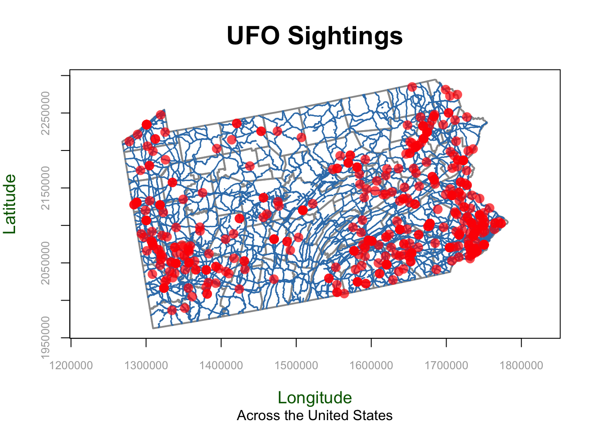
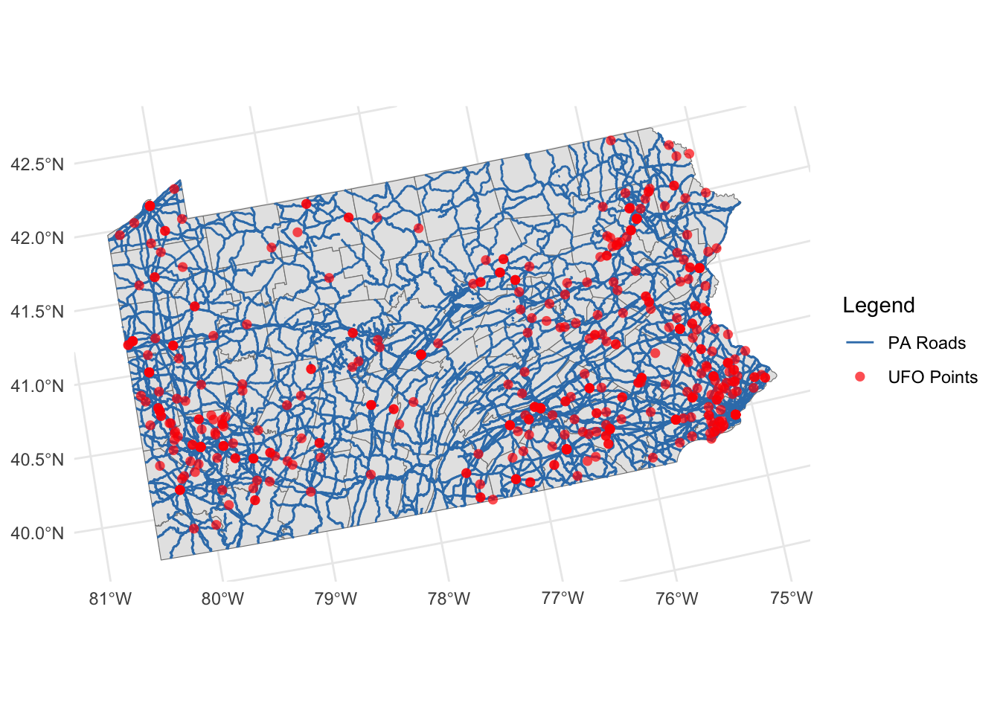
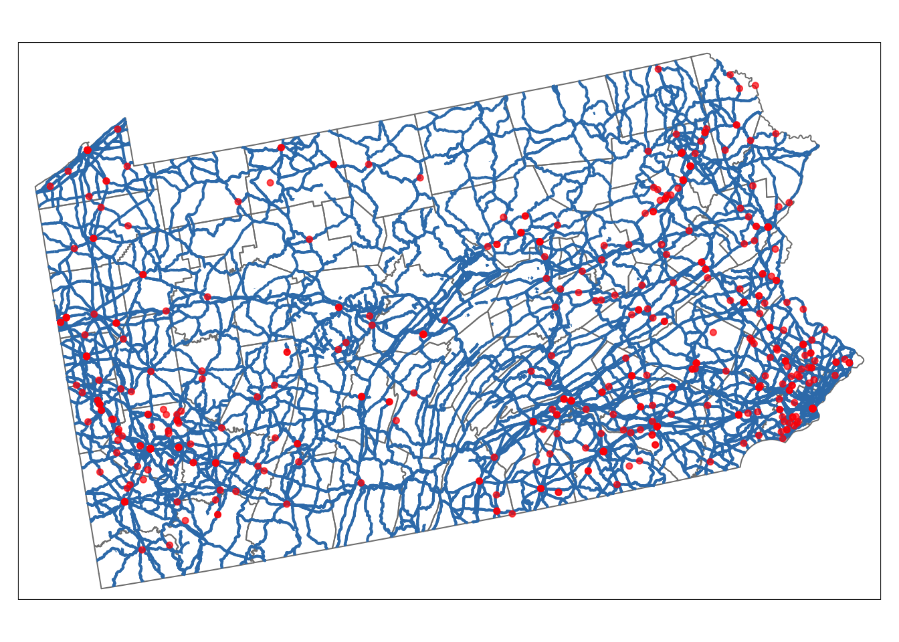

Lab 3: Spatial Basics
GEOG-364 - Spatial Analysis
GEOG-364 - Spatial Analysis
Welcome to Lab 3!
The aim of this lab is to start looking at tables of data and to make your first maps.
By the end of this week’s lab, you will be able to:
- Make a markdown template
- Read in data from an excel file
- Conduct exploratory data analysis
- Wrangle a table of data
- Make initial plots and maps
The lab is worth 110 points and there is a rubric at the end of this page.
THIS IS A TWO WEEK LAB. You have two full lab sessions, then, assignment 3 is due the week afterwards.
WEEK 1
A: Set up - DON’T SKIP
Step A1. Files & Projects
POSIT CLOUD people, expand for set up
Step i:
Go to https://posit.cloud/content/ and make a new project for
Lab 3
Step ii:
Run this code IN THE CONSOLE to install
the packages you need.
- This is going to take 5-10 minutes, so let it run and carry on.
install.packages("readxl")
install.packages("tidyverse")
install.packages("ggplot2")
install.packages("dplyr")
install.packages("remotes")
remotes::install_github(repo = "r-spatial/sf",
ref = "93a25fd8e2f5c6af7c080f92141cb2b765a04a84")
install.packages("terra")
install.packages("tmap")
install.packages("elevatr")
install.packages("nasapower")
install.packages("osmdata")
install.packages("tigris")
install.packages("rmdformats")
install.packages("plotly")
install.packages("ggstatsplot")
# If you get a weird error it might be that the quote marks have messed up.
# Replace all of them and ask Dr G for a shortcut.Step iii:
Go to the Lab Canvas page and download
these 3 files. Upload each one into your project
folder.
Forgotten how? See Lab 2 Set-Up.
- Your PERSONAL UFO dataset (look for the csv file with your email
ID).
- Your PERSONAL Spatial State-level dataset.
- The lab report template .RmD file.
R-DESKTOP people, expand for set up
Step i:
Create a new project for Lab
3.
Forgotten how? See Lab 2 Set-Up.
Step ii:
Go to the Lab Canvas page and download
these 3 files.
Put each one in your Lab 3 project folder.
- Your PERSONAL UFO dataset (look for the csv file with your email
ID).
- Your PERSONAL Spatial State-level dataset.
- The lab report template .RmD file.
Step iii:
Open the Lab report template and try to
knit. Install any packages you are missing (either via clicking the
little yellow bar or by clicking Packages/Install)
Step A2. Change the theme
Instructions
This is more for us when we’re grading! It helps us to not go insane
when we’re reading 60 reports.
Step i: Change the AUTHOR line to your personal
E-mail ID
Step ii: Go here and choose a theme out of downcute,
robobook, material, readthedown or html_clean: https://github.com/juba/rmdformats?tab=readme-ov-file#formats-gallery.
DO NOT CHOOSE html_docco - it doesn’t have a table of contents
Step iii:
Change the theme line on the template
YAML code to a theme of your choice. See the example YAML code below
Note, downcute chaos is different - see below
- Example YAML code if you want
robobook,material,readthedownorhtml_clean. You can also change the highlight option to change how code chunks look. - see the rmdformats website.
---
title: "Lab 3"
author: "ADD YOUR EMAIL ID"
date: "`r Sys.Date()`"
output:
rmdformats::robobook:
self_contained: true
highlight: kate
---- Example YAML code if you want
downcuteordowncute chaos. For white standard downcute, remove the downcute_theme line.
---
title: "Lab 3"
author: "ADD YOUR EMAIL ID"
date: "`r Sys.Date()`"
output:
rmdformats::downcute:
self_contained: true
downcute_theme: "chaos"
default_style: "dark"
---Step A3. DO NOT KNIT
There is code missing in your reports for you to complete and it will not work.
B: UFO Analysis - Week 1
You have each been given some (genuine) about UFOs for a specific US State. Because you all have unique data, you will all get different results and so you can work together.
Step B2. Learn about the datasets
Instructions
Step i: First, learn about the UFO data (you will
write about it in Step 3). Look at these websites and BRIEFLY note down
to yourself,, how was the data collected? Why? e.g. what were the people
who collected the data trying to achieve? Also note down any other
relevant information you can see. E.g. is data stored as points or
polygons etc.
The raw data was collected from here: https://nuforc.org/
The actual data was obtained from here https://github.com/planetsig/ufo-reports
Step ii: You are also going to be using some
data from the US government American Community Survey (you will write
about it in Step 3). Look at these resources and BRIEFLY note down to
yourself, how was the data collected? Why? e.g. what were the people who
collected the data trying to achieve? Also note down any other relevant
information you can see. E.g. is data stored as points or polygons etc.
You can read about it here: https://www.socialexplorer.com/help/faq/knowledge-base/american-community-survey-basics
Or there are a LOAD of youtube videos and resources out there
SUBMITTING WEEK 1
You don’t need to submit anything this week.
HOWEVER, I will give two bonus points (within the lab) to anyone who submits their completed .Rmd and .html up until this point in your Lab 3 canvas assignment.
- You are getting the bonus point for not leaving it all until the last minute. I don’t currently have the capacity to provide individual feedback unless you ask questions as a submission comment. You will resubmit with the full report next week
WEEK 2:
C. DON’T SKIP (Important!)
C1. Week 2 Introduction
Welcome to the second part of Lab 3. You are going to be looking at the data in more detail, and learn these new skills:
Loading these datasets for your UFO data.
Elevation data from the
elevatrpackageUS border and road data from the
tigrispackageUS military locations from the
osmdatapackage, which is linked to Open Street Map.
Extracting raster data and polygon data at point locations
Summarising point data across polygons
Making professional maps
Conducting and interpreting hypothesis tests
Considering the process & pattern in your UFO data.
Note, By this point you have hopefully realised that your object of
analysis is NOT an actual UFO!
Instead it’s a reported
sighting of a UFO to NUFORC by an interested person. So bear in
mind that this dataset might say more about the spatial patterns of
“internet savvy people who are interested in UFOs” than anything
else.
C2. Getting started
By this point, you must have completed everything in Week 1. Then
- Re-Open your project file for Lab 3.
- Open your .RmD Lab 3 report from Week 1.
- Press knit to make sure it works and looks good. Correct any errors/typos that you see.
- If it doesn’t knit at this point or you have qustions, ASK FOR HELP IN LAB.
Now, there are few things you MUST tweak in order to make lab 2 work:
C3 IMPORTANT Correct my typo!
Instructions
Some of you who had an early version of the lab 3 template might need to correct a typo in single code chunk.
Scroll up to near the top of your report abd look in the “Make Spatial” section. You should see a code chunk about making the ufo_sf variable.
In an early version I accidentally left in an old command which sets up your data with the wrong map projection.
If your Make Spatial code chunk looks DIFFERENT to this, replace the code-chunk with this code.
ufo_sf <- st_as_sf(ufo, coords = c("Longitude", "Latitude"), crs = 4326)
# Transform the map projection
albers <- 5070
ufo_sf <-st_transform(ufo_sf,crs=albers)
acs_sf <-st_transform(acs_sf,crs=albers)C4 IMPORTANT Add packages
Instructions
Scroll up to your library code chunk at the top. Add these two packages to the end and save/knit your report. Then try to run the library code chunk and if needed, download/install the packages from the internet.
library("raster")
library("rstantools")
library("exactextractr")C5 IMPORTANT Week 2 lab template
Instructions
Finally, I have provided a template for your work in week 2.
- Go to Canvas and the Lab 3 website.
- Download the WEEK2_Template.RmD and put it in your Project 3 folder.
- In R-Studio, open WEEK2_Template.RmD, highlight everything (CmD-A if you want a keyboard shortcut) and press copy.
- Go to your main Lab 3 report, scroll to the end and press paste.
- Knit to check it all works.
D. UFO Analysis Continued
You will again continue to follow through your lab report and the instructions are there. I will be putting tutorials here to help you.
D1. TIGRIS Tutorial
What is TIGRIS in general?
I’ve cut a one minute section of this seminar for you that explains what data is behind TIGRIS
How to use the TIGRIS package IN R?
Here’s a chapter explaining TIGRIS in R
You can also see worked examples here:
And here is longer video from later in the seminar that explains it all.
D2. Making maps
Making maps using BaseR
There are MANY tutorials and videos out there. So if my style of explaining doesn’t work for you, try one of these.
In base R, we use the plot command. To add layers, we put a new plot command but put add=TRUE at the end. For example, here’s a plot of the UFO locations simply colored blue along with roads and state borders.
First Sub-Plot - The base plot is where you define overall settings such as axis labels, titles, and limits. These options apply only when creating the initial plot to set the plot canvas.
Adding Layers - We can then add adding additional layers by writing a newplot command but putting add=TRUE in the options (note, this is only for maps! For normal data the command is lines() ). Aspects such as axis labels (xlab, ylab) and main titles (main, sub) are not needed again, but you can change things like point size.
st_geometry The st_geometry command means don’t look at any of the variables, just plot the locations stored under geometry.
Here’s an example with EVERYTHING. You don’t need any/all of the variables, they’re here so you can see them and so you can copy/paste/edit.
PLEASE DON’T USE THESE DEFAULTS! That’s what this lab is about, to make better custom ones.
# BASE/INITIAL PLOT
# Start with the borders. It could be any of the datasets,
# I'm just choosing what gets plotted first,
plot(st_geometry(border_sf_albers),
border = grey(.6),
col=NA, #empty polygons
xlim = c(1268320,1781848),
ylim = c(1962636, 2294525),
main = "UFO Sightings",
sub = "Across the United States",
xlab = "Longitude",
ylab = "Latitude",
asp = 1,
axes = TRUE,
ann = TRUE,
lwd = 2,
lty = "solid",
col.axis = "darkgray",
col.lab = "darkgreen",
font.main = 2,
cex.main = 1.8,
cex.lab = 1.2,
cex.axis = 0.8)
# Then add in the roads line data. THIS IS A LAYER I AM ADDING
plot(st_geometry(myroads_sf), add = TRUE,
col = "#377eb8",
lwd = 1.5,
lty = "dashed")
# And finally, add in the UFO point data. THIS IS A LAYER I AM ADDING
plot(st_geometry(ufo_sf), add = TRUE,
pch = 16,
cex = 1.5,
col = rgb(1, 0, 0, 0.7),
col.lab = "red",
cex.lab = 0.7)
Options Specific to the First Plot (Base Plot)
These options are used only for the initial plot (or “first sub-plot”) in base R. They set up the overall plot layout, such as axis labels, aspect ratio, and titles, and are not repeated for additional layers.
ann: Logical value for annotating the plot, such as adding main title and axis labels. Setting ann = FALSE removes all annotations, useful if you don’t want to clutter the plot.asp: Sets the aspect ratio of the plot. asp = 1 ensures that one unit on the x-axis is equal in length to one unit on the y-axis, which is especially important for maintaining geographical accuracy.axes: Logical value indicating whether to draw axes. Setting to FALSE omits the axes for a cleaner plot.bg: Specifies the background color for the entire plot, such as “lightblue” or an RGB value, making it suitable for thematic maps.cex.axis: Controls the size of axis tick labels. Values typically range from 0.5 to 2, helping to make axis labels more readable.cex.lab: Adjusts the size of axis labels (titles), with values ranging from 0.5 to 2. This is particularly useful for making labels more prominent or subtle.cex.main: Size of the main title text. Values greater than 1 enlarge the title, whereas values less than 1 reduce it.col.axis: Specifies the color of the axis labels, such as “darkgray” or RGB values.col.lab: Color of the axis titles (labels), for instance, “darkgreen” or an RGB value. Helps in making axis labels stand out.font.main: Font style for the main title. Possible values include 1 (plain), 2 (bold), 3 (italic), or 4 (bold italic).frame.plot: Logical value indicating whether to draw a box around the plot. Set to TRUE to add a frame, which can make the plot boundaries clearer.main: Main title of the plot, providing a summary description of the visual representation.sub: Subtitle of the plot, providing additional context or information below the main title.xlab: Label for the x-axis, describing what the horizontal axis represents.xlim: Limits for the x-axis, given as a vector (e.g., c(-130, -60)) to zoom in or out of a particular region.ylab: Label for the y-axis, describing what the vertical axis represents.ylim: Limits for the y-axis, given as a vector (e.g., c(20, 55)) to focus on a particular latitude range.
Options Specific to ANY plot
These options are used for any plot, whether it is the first plot or an additional layer. They control the appearance of the data being plotted, such as line color, point size, and transparency.
add: Adds a layer to the existing plot. Set toTRUEto layer additional data on the map without erasing previous layers.col: COLOR used for points or lines. Can be a named color (e.g.,"blue"), RGB value INCLUDING TRANSPANCY (e.g.,rgb(1, 0, 0, 0.7)), or hexadecimal color code (e.g.,"#377eb8").lty: LINE type, such as"solid","dashed", “dotted”, or numeric values from1to6` for different styles.lwd: LINE width. Values greater than1make lines thicker. Common values range from1to5.pch: POINT symbol shape. Values range from0to25, with16being a common filled circle. Try the commandplot(1:20,1:20,pch=1:20)to see them all.cex: POINT Size. Typically ranges from0.1(very small) to10(very large).
Making maps using GGPLOT2
On the surface, ggplot2 is similar to baseR. For example it uses layers similarly, although instead of putting an add=TRUE at the end of the plot command, you use the + symbol to connect layers Here’s an example of a ggplot2 map with the same layers as the baseR example above.
# here "color" means which name is it using for the legend.
ggplot() +
geom_sf(data = border_sf_albers, color = "grey50") +
geom_sf(data = myroads_sf, aes(color = "PA Roads")) +
geom_sf(data =ufo_sf, aes(color = "UFO Points"),
shape = 16, alpha = 0.7, size = 2) +
scale_color_manual(values = c("PA Roads" = "#377eb8",
"UFO Points" ="red")) +
labs(color = "Legend") +
theme_minimal()
MORE TO COME! But ChatGPT is really useful here
Making maps using tmap
There are LOADS of great tutorials out there.
tmap is designed to make mapping easier. It also uses the + symbol to connect layers but it tries to make all the terminology less confusing.
Basically you “load” a layer with tm_shape, then decide how to plot it. More to come! But for now, google tmap tutorial point data or ask Chatgpt.
# Here's an example, more to come!
tm_shape(border_sf_albers) +
tm_borders(col = "grey50") +
tm_shape(myroads_sf) +
tm_lines(col = "#377eb8", lwd = 2, title.col = "Legend", legend.lwd.show = FALSE) +
tm_shape(ufo_sf) +
tm_dots(col = "red", size = 0.1, alpha = 0.7, title = "Legend") +
tm_layout(legend.title.size = 1)
D3. More tutorials to come
Instructions
SUBMITTING YOUR LAB
Remember to save your work throughout and to spell check your writing (next to the save button). Now, press the knit button again. If you have not made any mistakes in the code then R should create a html file in your lab2 folder, complete with a very recent time-stamp.
If you use the POSIT cloud website
You can download each of your .RmD and html files by:
- Clicking on the little box next to the Rmd in the Files tab, then
going to the little blue cogwheel (might need to make your Rstudio full
screen) and clicking export.

Repeat the process exactly for the html file underneath it (e,g, just have the html clicked.)
Now go to Canvas and submit BOTH your html and your .Rmd file in Lab 3
If you use the RSTudio desktop on your own computer
Press knit!
Go to your Lab 3 folder, In that folder, double click on the html file. This will open it in your browser. CHECK THAT THIS IS WHAT YOU WANT TO SUBMIT
Now go to Canvas and submit BOTH your html and your .Rmd file in Lab 3.

GRADING CHECK-LIST
to be added
[110 marks total]
What does your grade mean?
Overall, here is what your lab should correspond to:
| Grade | % Mark | Rubric |
|---|---|---|
| A* | 98-100 | Exceptional. Not only was it near perfect, but the graders learned something. THIS IS HARD TO GET. |
| NA | 96+ | You went above and beyond |
| A | 93+: | Everything asked for with high quality. Class example |
| A- | 90+ | The odd minor mistake, All code done but not written up in full sentences etc. A little less care |
| B+ | 87+ | More minor mistakes. Things like missing units, getting the odd question wrong, no workings shown |
| B | 83+ | Solid work but the odd larger mistake or missing answer. Completely misinterpreted something, that type of thing |
| B- | 80+ | Starting to miss entire/questions sections, or multiple larger mistakes. Still a solid attempt. |
| C+ | 77+ | You made a good effort and did some things well, but there were a lot of problems. (e.g. you wrote up the text well, but messed up the code) |
| C | 70+ | It’s clear you tried and learned something. Just attending labs will get you this much as we can help you get to this stage |
| D | 60+ | You attempt the lab and submit something. Not clear you put in much effort or you had real issues |
| F | 0+ | Didn’t submit, or incredibly limited attempt. |